尋問官一覧
アニメシリーズ反乱者たちで初登場し，コミック『シスの暗黒卿』(原題:Darth Vader: Dark Lord of the Sith)シリーズやゲームフォールン・オーダーで活躍する尋問官たち(+α)の一覧（2021.09.15.更新）
横スクロール
ネタバレになる情報を表示する
| Lightsaber(s) | Species | Gender | Died | 主な登場作品 | ||
|---|---|---|---|---|---|---|
| The Grand Inquisitor | 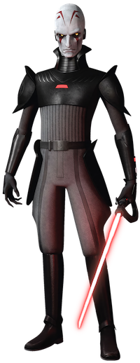 | 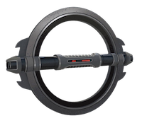 | Pau'an | Male | 4 BBY, Sovereign, Mustafar system |
|
| 2nd Sister (Trilla Suduri) | 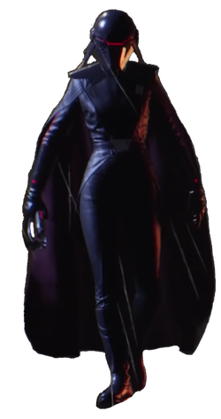 | 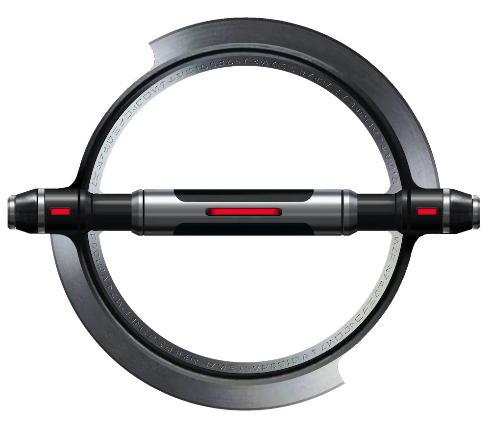 | Human | Female | 14 BBY, Fortress Inquisitorius, Nur |
|
| 3rd Sister Reva | 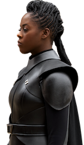 | Human | Female | ? | ドラマオビ=ワン・ケノービ | |
| 3rd Brother? | ? | ? | ? | Male | ? | |
| 4th Sister | 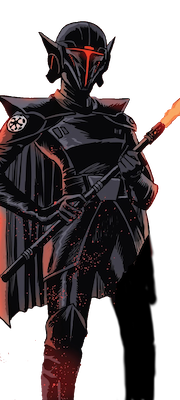 ? | ? | Female | ? | コミックStar Wars Adventures: Return to Vader's Castle(変装。本人は未登場) | |
| 5th Brother | 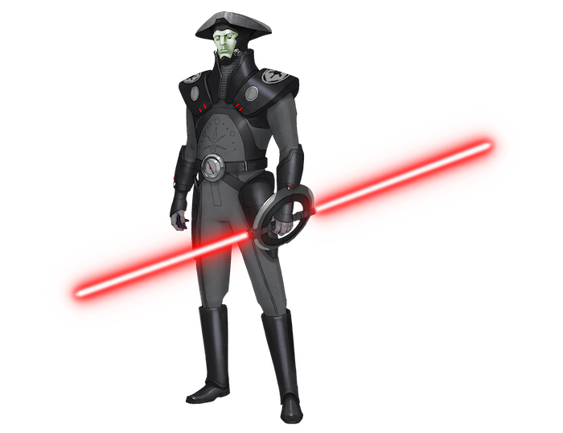 | 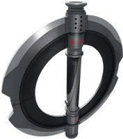 | ? | Male | 3 BBY, Malachor |
|
| 6th Brother (Bil Valen) | 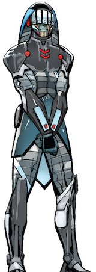 | ? | Male | 18 BBY, Raada |
| |
| 7th Sister | 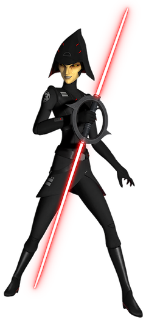 | 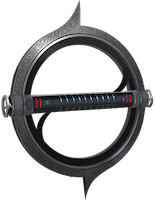 | Mirialan | Female | 3 BBY, Malachor |
|
| 8th Brother | 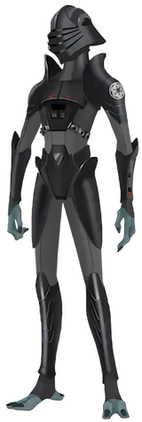 | 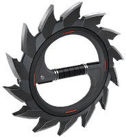 | Terrelian Jango Jumper | Male | 3 BBY, Malachor |
|
| 9th Sister (Masana Tide) | 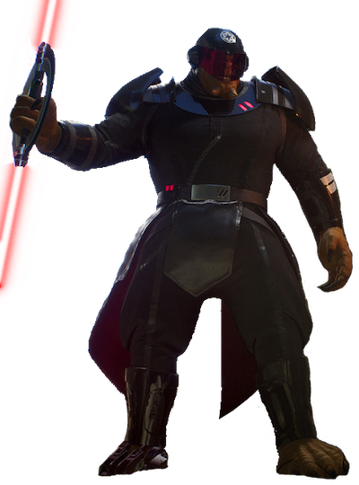 | 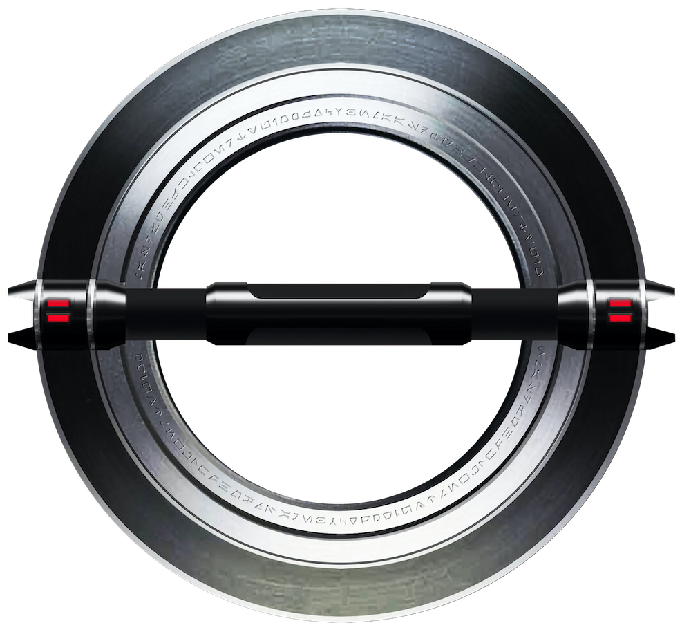 | Dowutin | Female | 14 BBY, Kashyyyk? |
|
| 10th Brother (Prosset Dibs) | 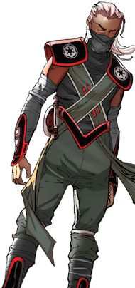 | 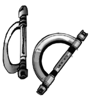 | Miraluka | Male | 18 BBY, Mon Cala | コミックシスの暗黒卿 燃える海原 |
| ? | 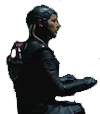 | ? | Female? | ? | ドラマオビ=ワン・ケノービ | |
| ? | 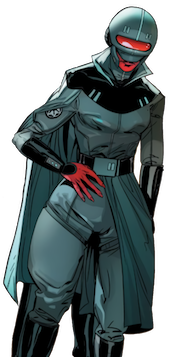 | 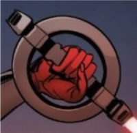 | ? | Female | Coruscant | コミックシスの暗黒卿 ベイダーの城 |
| ? | 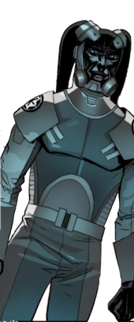 | Twi'lek | Male | Coruscant | コミックシスの暗黒卿 ベイダーの城 | |
| (Jerserra's master) | ? | 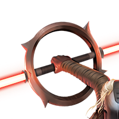 | ? | Female | Dathomir | ゲームブックGhosts of Dathomir (言及のみ) |
| ? | ? | ? | ? | ? | ? | ゲームStar Wars: Uprising(言及のみ) |
| The Inquisitor (Non-canon) | 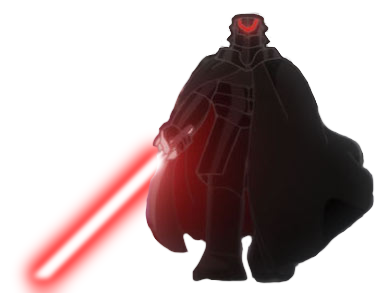 | ? | ? | Imperial Era, T0-B1's home planet | アニメスター・ウォーズ：ビジョンズ T0-B1 (ノンカノン作品) | |
| M-OC (Hunter droid) | 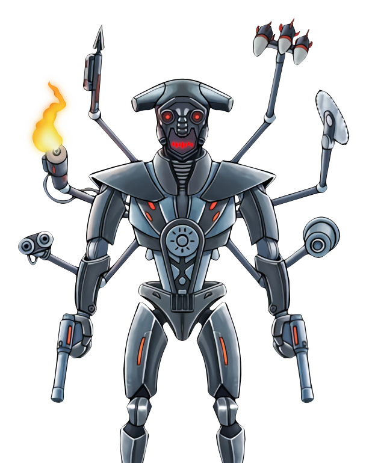 | 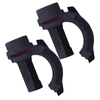 | Hunter droid | Masculine programming | 4 ABY, Death Star II(Non-canon) |
|
| Naare (Agent/Non-canon) | 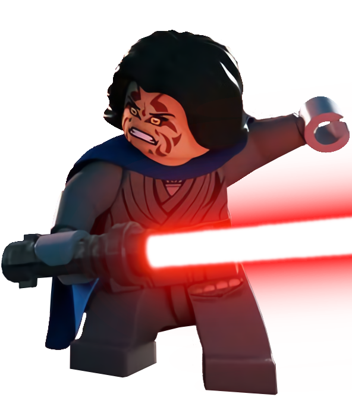 | ? | Female | - | LEGOアニメフリーメーカーの冒険(ノンカノン作品) |
※タイトルが日本語の作品は邦訳済み。映像作品はすべてディズニー・プラスで視聴可能